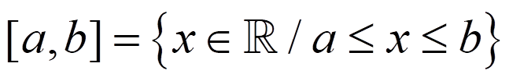

En Matemáticas, un intervalo es un conjunto de números reales con la propiedad de que cualquier número que esté entre dos números del intervalo también pertenece a él. Hay diferentes tipos:
Intervalo abierto:
Intervalo cerrado:

Intervalo semiabierto o semicerrado:
Intervalos de extremo infinito:
Ejercicio. Rellena la siguiente tabla:
| a) | |||
| b) | [3,∞) | ||
| c) | {x∈R/ -1 < x < 12} | ||
| d) |
Soluciones:
a) [1,5]; {x∈R/ 1 ≤ x ≤ 5}
b) ; {x∈R/ x ≥ 3}
c) (-1,12);
d) (-∞,1); {x∈R/ x < 1}